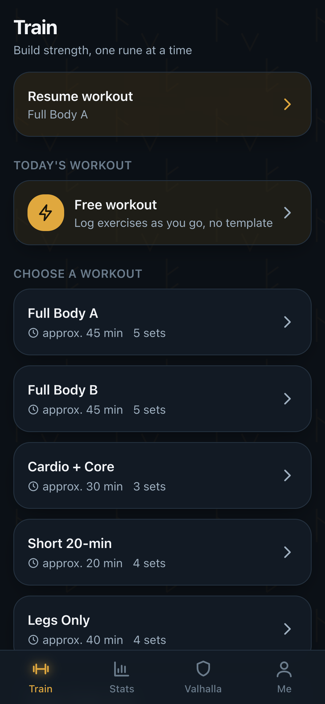
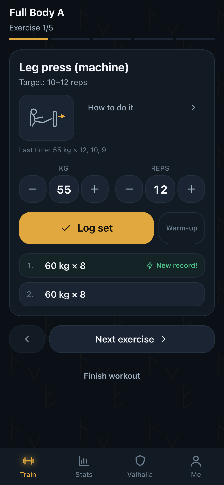
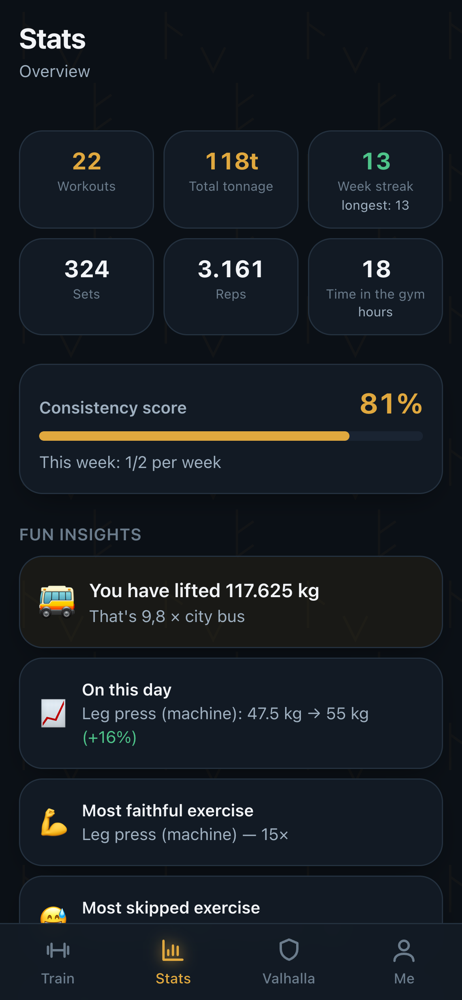
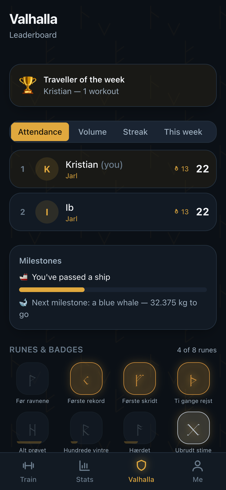
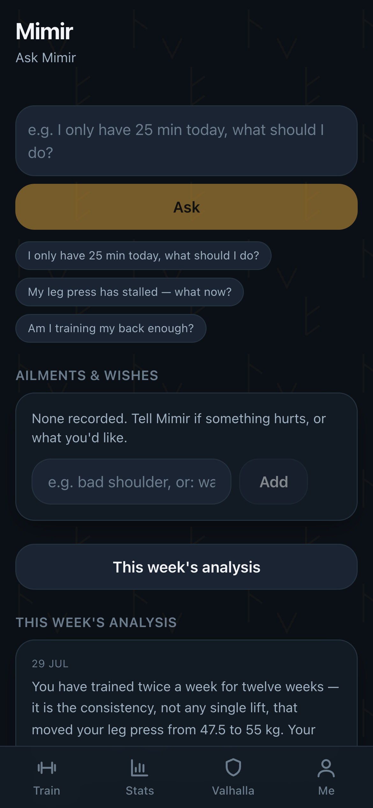
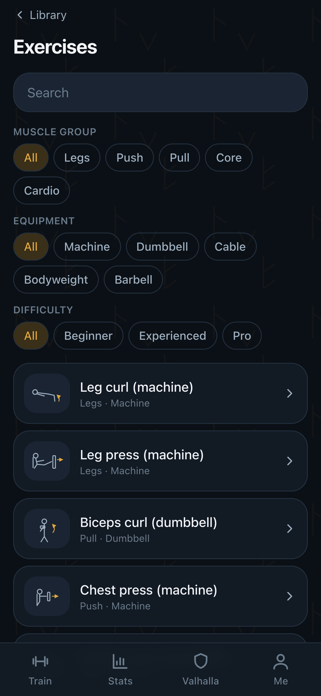

A training app for iPhone and web, built to be used one-handed with sweaty fingers. A set is logged in under two seconds — including in the basement gym where there is no signal at all.
⚠️ Early development & built with Claude Code. Uruz is provided as-is, with no warranty and no liability whatsoever — you use it entirely at your own risk.
The images below were captured from the running app with twelve weeks of demo training in the database — not drawn, not touched up, and not anyone's real training log.






The core is fast logging and honest statistics. The Norse layer is seasoning, never a gimmick: one tap turns it all the way down to plain numbers.
Weight and reps are pre-filled from last time, so usually you just confirm. The rest timer starts itself, and records are celebrated the moment they happen.
Every set is saved locally first and syncs by itself once the signal returns. No spinner, no lost sets, no excuses.
Progress per exercise, tonnage, an attendance calendar and muscle balance — plus fun insights that keep you coming back.
A weekly analysis based on your own numbers, a chat you can ask for advice — and the ability to adapt the training when something hurts.
Runes to unlock, ranks from Thrall to Einherjar, milestones and a friendly rivalry between everyone in the hall.
The ravens remember for you: reminders on your training days, praise after a good session, and a gentle nudge if you have been away. Never shame.
Most training apps stall when the signal does. Uruz does not. Every set gets its id in the browser, goes into a queue in IndexedDB and appears immediately — long before the server has heard about it.
When the network returns, the queue drains itself. Because the id is made up front, the same queue can be replayed twice without duplicating a single set or awarding the same record again.
Progress graphs per exercise with estimated 1RM, total tonnage, an attendance calendar, and a muscle balance that reveals whether you push far more than you pull.
And then the other layer: your tonnage translated into something you can picture, what you lifted on this day four weeks ago, and which exercise you tend to skip.
Mimir is not a chatbot glued on the side. He knows your numbers, your programme and your aches — and he proposes concrete changes that you approve.
Notice the second message: it does not mention the shoulder at all. Mimir remembers it on his own — and keeps allowing for it until you say it is fine again.
Nothing changes by itself. You see every change with its reasoning and approve it. The result is saved as a copy, so your original programme survives.
The model picks from a list of real exercise ids, and every id is validated against the library afterwards. Unknown ones are discarded — never guessed.
No diet advice, no comments about bodies or weight, no promises of healing. Pain is always referred to a doctor or a physiotherapist.
Mimir talks to Anthropic, OpenAI, Google, Ollama — or anything that speaks the OpenAI protocol, including a model running on your own server at home. With no API key at all, if it does not need one.
Switching provider is three lines in a config file. No code changes.
# Your own model on your own network — no key AI_PROVIDER=custom AI_BASE_URL=http://your-server.lan:8080/v1 AI_MODEL=gemma-4-26b-qat # …or a cloud service AI_PROVIDER=anthropic AI_MODEL=claude-sonnet-5 AI_API_KEY=sk-ant-…
Runes unlock as you show up. Ranks run from Thrall to Einherjar, and attendance weighs heaviest: the app rewards turning up, not being the strongest.
The leaderboard shares totals only — never anyone's raw training log. A private profile still takes part in the rivalry.
Uruz is first and foremost built to run as a Rune in Yggdrasil Panel — the panel that turns a server into something you can point and click at. A rune is an app the panel can sow: you pick it, fill in a couple of fields, and it is running with its own subdomain, its own data directory and its own backup.
The app works out the address it is being reached on, so sign-in links and Face ID work behind the panel's proxy without anyone typing a domain anywhere. Everything else — AI, email, notifications — are fields you can leave blank.
yggdrasil/uruz.yaml# One call, and it runs docker run -d \ -p 3000:3000 \ -v uruz-data:/data \ ghcr.io/kristianwind/uruz:latest # Or entirely locally npm install && npm run setup npm run dev
Everything that can be computed is a pure function with no I/O. That is why every number in the app is unit-tested, and why Uruz can coach sensibly with no AI at all.
Pages and components. No domain logic — they only call into /lib.
1RM and progression · statistics · badges and rank · coach insights and adaptation. No fetch, no database, no React.
node:sqlite locally (zero setup) · Supabase/Postgres with Row Level Security in production. The UI never sees a database driver.
AI providers behind one chat() · passkeys and sign-in links behind one auth surface · web push with email as the fallback · an offline queue in IndexedDB.
| Layer | Choice | Why |
|---|---|---|
| Framework | Next.js 15 · TypeScript · React 19 | One codebase for web and PWA; can be mounted under a larger panel |
| Database | node:sqlite → Supabase/Postgres | Zero setup locally, RLS in production |
| Privacy | Row Level Security | Access is enforced in the database, not only in the UI |
| Login | Passkeys · password · sign-in link | Face ID where it works, a password where it does not |
| Offline | IndexedDB queue + service worker | iOS lacks Background Sync — the app drives the queue |
| AI | Own provider surface | Any provider, including a key-free model on your own network |
| Language | Danish · English | The exercise content too, not just the buttons |
Uruz runs locally on a built-in database. You do not have to install Postgres, create a Supabase account or obtain an API key to see the app running.
# 1 — fetch dependencies npm install # 2 — prepare database and content npm run setup # 3 — start the app npm run dev
# See the app with 12 weeks of data in it npm run db:seed:demo npm run db:seed:history # Keys for notifications npm run gen:vapid # Run the tests npm test
Then open localhost:3000. The first time, you are asked to create the administrator account — everyone else you invite yourself.
Open in Safari → the Share icon → “Add to Home Screen”. Uruz then sits on the home screen and opens full-screen with no browser bar.
Run the migrations in supabase/migrations/, set the keys as environment variables and deploy to Vercel. RLS comes with them.
README for setup, ARCHITECTURE for how it fits together, and DECISIONS for why each choice was made.